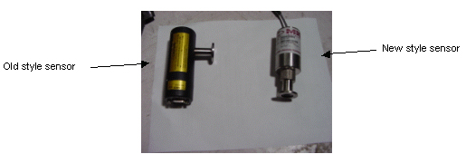

Operating Documentation
Direction 5440001-3, Rev# 6
Signa HDxt Service Methods
Module Version 1.0, Version Date 5/3/07
Operating Documentation |
Table 1: BOC Edwards Dry Vacuum Pump Model XDS10-C
| Parameter | Specification |
| Input Voltage | 120 VAC +/- 10 % @ 50/60 hz +/- 3 hz |
| Nominal Current | 60 Hz is 6.4 amps / 50 hz is 7.2 amps |
| Motor Winding Resistance | Hot to Neutral 1.9 ohms + / - 0.5 ohms; infinite resistance to ground. |
| Pumping Speed | 9.3 cubic meters / hour @ 50 hz 11.1 cubic meters / hour @ 60 hz |
| NOTE: | Note the new style gauge controler, model 908A does not require calibration. See Illustration 1 to identify sensor type. |
Illustration 1: Sensor Identification

Table 2: Terranova Scientific Model 926-GE Dual Convection Gauge Controller
| Parameter | Specification | ||
| Input Voltage | 120 vac; powered from PDU (see note 1) | ||
| Units of Display | Torr or mBar; user selectable | ||
| Display Resolution | Varies; from 0.1 mTorr below 10 mTorr, to 5 Torr above 100 Torr. | ||
| Set Points | Set Point 1 High & Low, configurable by the operator Set Point 2 High & Low, configurable by the operator TwinSpeed Set Point Values: Set point 1 Low = 150 torr Set point 1 High = 190 torr Set point 2 Low = 130 torr Set point 2 High = 200 torr | ||
| Memory | Nonvolatile for VAC, ATM and Set Points | ||
| Outputs | RS232 – Allows user to read pressure and configure set points; 9600
baud, 8-N-1; available through the D15 accessory connector. Analog Output – Calibrated, 12 bit resolution, logarithmic, 0.50 volts/decade; 0.0 mTorr = 0 volts; 10 mTorr = 0.50 volts; 100 mTorr = 1.00 volt etc., available through the D15 accessory connector. Control Output – The Model 926-GE is specially designed for GE. The outputs are (two) switched 15 vdc sources used to control external solid-state relays. See Note 2. | ||
| |||
| |||
| NOTE: | Note the new vacuum sensor is not sensitive to mounting orientation. |
Table 3: MKS/HPS Type 317 Convection Tube (Vacuum Gauge Sensor)
| Parameter | Specification |
| Mounting Orientation | Gauge tube axis horizontal and inlet port pointing down. |
Table 4: Vacuum Valve Solenoid
| Parameter | Specification |
| Input Voltage | 120 VAC +/- 10% @ 50/60 Hz +/- 3 Hz |
| Nominal Current | 0.150 amps |
| Nominal Solenoid Resistance | Nominal resistance 115.7 ohms |
| Valve Position | Normally closed with no power applied |
Table 5: Solid-State Relay
| Parameter | Specification |
| Signal Input | + 5 to + 15 vdc |
| Max Output Load Current Rating | 20 amps for Vacuum Pump solid-state relay 10 amps for Vacuum Solenoid Valve solid-state relay |
| Visual Indicator | Red LED illuminates with presence of input signal. |